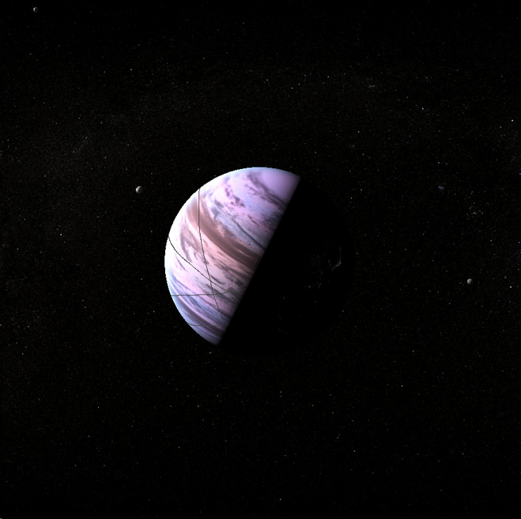

Vash
Vash viewed from high orbit. The Rings have been contrast-enhanced in post-production.
Vash is located in the Vulcan system, as the fifth major planet. Once named Tel-Alep, after a god of knowledge (the name translates as The Watcher), it gained its current name through linguistic drift over the Time of Awakening many centuries ago.
Vash is a gas giant world, heavily colonised and industrialised.
Smallish for a gas giant, at the inhabited altitudes (disregarding the Pipe), the conditions are reasonably liveable as gas giants go. Most habitats are in the water-cloud range, and have outside conditions of about three to six Standard Atmospheres of pressure, 240 to 300 Kelvin temperature (about -30 to +20 Celcius) and about 1.3 g (similar to on the Vulcan homeworld). There is of course daily, seasonal and meteorological variation).
Like any gas giant, Vash’s upper atmosphere is mostly hydrogen and helium, but with other volatiles mixed in forming clouds, and impurities that give it its striking and unusual orchid pink.
Rather than floating under balloons like the settlements on Florfworld, most structures on Vash are suspended by cables from the Orbital Rings, keeping them stationary relative to one another. Most settlements are cuboidal, dozens of large towns stacked on top of one another.
What are Orbital Rings?
An Orbital Ring is a planetary-scale megastructure. In brief, a metallic fluid flows through a pipe at significantly higher than orbital velocity; the excess centrifugal force allows it to support the pipe, which does not orbit but is suspended above Vash rotating once per Vash day (nine hours). Because of the enormous fluid velocities involved, the fluid doesn't simply flow through an ordinary pipe; it is suspended and accelerated magnetically.
As most of the Rings are stationary to one another, almost all settlements are hung by cables from multiple Rings, both for redundancy in case of a catastrophic failure (which has never happened), and to minimise swinging (which isn't a problem nowadays anyway with the proliferation of large-scale artificial gravity and inertial dampeners).
The tension in the Rings is high enough that in addition to the settlements, the Rings themselves are inhabited and developed, used mostly for industry, manufacture, refining and docking operations. Almost no ships enter Vash's atmosphere; it's almost always easier to land at a Ring.
Read more at the Memory α Encyclopaedia GalacticaVash is a very diverse place - most of the environments are quite different to any terrestrial world, but they’re easily as varied as Vulcan is, if not more. Most people live on Platforms, which are exactly what they sound like, big platforms hung down into the atmosphere from the orbital rings built around Vash. Some of these have only one or a few layers, domed over at the top for people to live under the pink sky and the real sunlight; some even have uncovered spaces, sited at the altitudes where a fur coat and an oxygen mask will let a person survive outside as long as the air supply lasts. Most take advantage of three dimensions, being as tall as they are wide with many floors packed densely like a space station, though larger open spaces are present. Many of the Federation’s most accomplished architects, specialising in land, sea, high-altitude, underground and orbital design, cut their teeth under the cables of Vash, and the styles on display span centuries, schools of thought, and worlds, often on the same platform as areas are renovated. The overall effect is still mostly the rounded and buttressed pinkish-browns of the Vulcan schools of design. The sizes of the platforms, measured as their inhabited floor area, ranges from small town to large country.
The platforms and levels where mostly Vulcans live are generally very nice places, if a little, well, Vulcan. You won’t see a thriving nightlife in Vulcan areas, but everything’s clean and bright and beautiful (in that understated, almost incidental Vulcan way) and air conditioned and incredibly efficient. You’ll see a lot of hydroponics bays (Vash makes its own food, and exports to Minshara), a university or research institute seemingly every five minutes, and the labyrinthine buildings of the third largest bureaucracy in the Federation. Any space that hasn’t yet been filled by buildings is open above and below, creating frequent wide open public spaces.
About a quarter of the population is not Vulcan; most of these live in separate areas to the Vulcan population. This separation has arisen naturally and accidentally, and is regretted by most Vulcans and many of the non-Vulcans, especially those who live on mostly-Vulcan platforms. The exception is Gluspol, colloquially called the Pipe, which is Vash’s coremining operation. With a population of twelve billions from all corners of known space, most of the coreminers fall somewhere between indifferent and mildly resentful of the Vulcan Directorate that oversees the local government (there are people genuinely uncritical of the Vulcan administration, they’re just not so common). The non-Vulcan areas of Vash are as diverse as their inhabitants, only united by their alien environment. There are bulbous networks of spheres built high up by the Andorians in a three-dimensional modification of the Grand Igloo architectural style, mostly-human ugly, boxed, inverted metropolises, gothic and spiky stalactites of Cardassian refugees, but almost every non-Vulcan habitat, and parts of the Vulcan ones, are a hodgepodge of varying elegance, the unification of many architectural styles and even more cultures living in them. In recent times, some of these areas have started to attract mostly-young Vulcans again, drawn by what the anthropologist Sinveng called “the finest exposition of Infinite Diversity for fifty light years or more.”
A few habitats (they number many, but are all small compared to most of the platforms) aren’t connected to cables. Most of these hang from balloons, and are mostly occupied by various forms of hermit. Airships used to be used extensively for transport around Vash (they used hot air, as there’s no gas lighter than hydrogen at the same temperature), but over the last several hundred years as the Rings were built, it’s become far faster to take a trip up a cable to space, hypersonically along the Rings, and down to your destination (or even go by hard-wired transporter), because almost everywhere worth visiting is hung from the Rings. Airships still exist as a tourist attraction, though. Or rather, a tourist occupation. Most of the Vulcans in the majority-Vulcan population would prefer if tourists didn’t visit, but they will anyway and they might as well have something to do so they don’t get in the way of important Vulcan business.